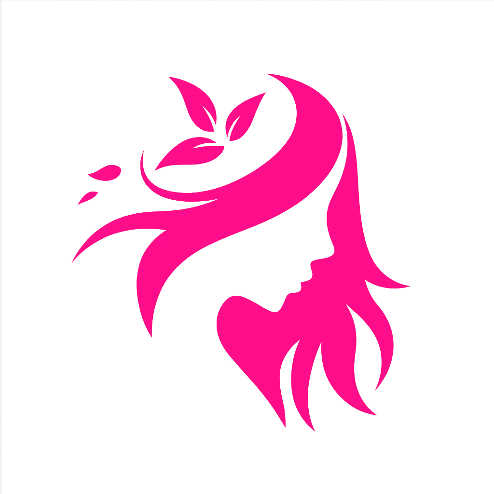

Kelola ruangan klinik dan perangkat/alat medis secara terpadu: tipe & kapasitas ruang, kategori perangkat, penempatan (assignment), jadwal & ketersediaan (availability), serta request maintenance—terintegrasi dengan modul-modul ClinicOne lainnya. Kompatibel dengan Odoo 18 Community Edition.
Odoo 18 CE Multi-company Mail/Activities Maintenance Dashboards
Modul ini memusatkan pengelolaan master Ruang (tipe, kapasitas, fasilitas) dan Perangkat/Alat Medis (kategori, nomor seri, status kesiapan), termasuk riwayat penempatan, perpindahan antar-ruang, ketersediaan per shift, serta request maintenance. Dirancang untuk bekerja erat dengan Booking, Queue, Treatment, dan Inventory agar operasional klinik berjalan efisien.
Semua model dilengkapi mail.thread & mail.activity.mixin untuk jejak audit & kolaborasi.
Terintegrasi dengan: clinic_base, clinic_patient, clinic_hr, clinic_doctor, clinic_booking, clinic_queue_room, clinic_treatment, clinic_inventory, clinic_billing, clinic_ar, clinic_ap, clinic_finance, clinic_accounting, clinic_pricing, clinic_package, clinic_membership, clinic_wallet, clinic_ecommerce, clinic_portal, clinic_marketing, clinic_feedback, clinic_reports, clinic_dashboard, clinic_l10n_id, clinic_audit.
Integrasi dilakukan via relasi, server actions, activities, dan mail templates agar modul tetap loosely-coupled.
Distribusi di bawah lisensi LGPL-3.0. Lihat berkas LICENSE.
Ikuti panduan kontribusi ClinicOne: tulis test, patuhi gaya penulisan, dan dokumentasikan dampak migrasi.